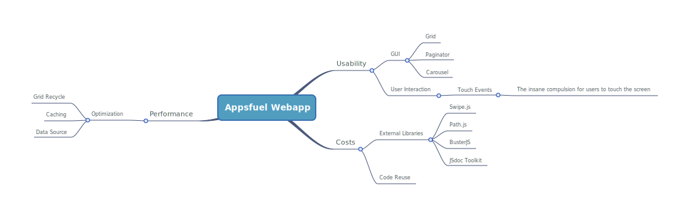

Mobile Webapp - Theory and Technique
Tips & Tricks
Performance
- One Ajax Request -> Lots of Views
Optimization
- Handle all data-requests with one Class
- ...that Must also handle the data stream
Data Source
- Handles XHR and Local Requests
- Parses Data
- Stores Data in memory
- Dispatch events about data
Usability
- “It is far better to adapt the technology to the user than to force the user to adapt to the technology.” – Larry Marine
User Interface
- “A picture is worth a thousand words. An interface is worth a thousand pictures.” - Ben Shneiderman
- "Don't worry Ben, already we make webapp thousand pictures". - Stefano Sergio
Gestures
- The insane compulsion for users to touch the screen
GUI
- We want a lot of grids and the user should swipe among them
Performance
- Smooth and fluid transitions among Grids
Optimization
- Too much grids will kill you
- ...besides you'll probably never see all those data
Paginator
- It only renders three grids and then...
- recycle them for all data
Carousel
- Handles any number of images
- Creates an 'inifnite' effect adding a copy of the first and the last image


If only i had a mobile framwork...
Something is going to happen...